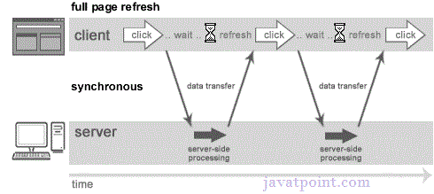
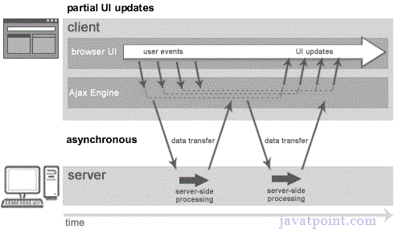

AJAX permite enviar y recibir datos asincrónicamente sin recargar la página web. Así que es rápido. También permite enviar sólo información importante al servidor y no a toda la página. Así que sólo los datos importantes del lado del cliente se envían al lado del servidor, haciendo una aplicación interactiva y más rápida.
Antes de entender AJAX, entendamos primero el modelo de aplicación web clásica y el modelo de aplicación web de AJAX. Una solicitud síncrona bloquea al cliente hasta que se complete el funcionamiento, es decir, el navegador no responde. En tal caso, el motor javascript del navegador está bloqueado.

Como se puede ver en la imagen anterior, la página completa se actualiza en el tiempo de solicitud y el usuario se bloquea hasta que se completa la solicitud. Por otro lado, una petición asíncrona no bloquea al cliente, es decir, el usuario puede realizar otras operaciones. En tal caso, el motor javascript del navegador no está bloqueado.

Como se puede ver en la imagen anterior, la página completa no se actualiza en el tiempo de solicitud y el usuario obtiene respuesta del motor de AJAX.
AJAX no es una tecnología sino un grupo de tecnologías interrelacionadas. Las tecnologías AJAX incluyen:
- HTML / XHTML y CSS
- DOM
- XML o JSON
- XMLHttpRequest
- JavaScript